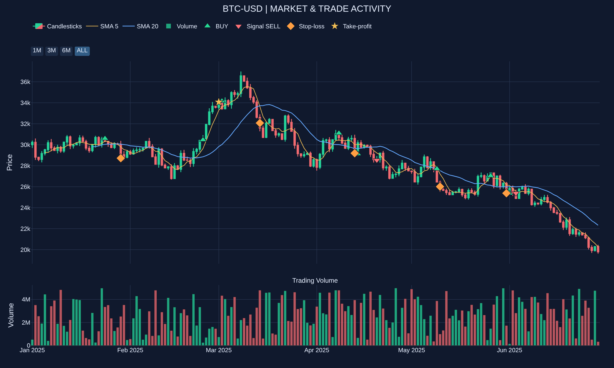

Regression tests passing
INDEPENDENT SOFTWARE ENGINEERING PROJECT
Built to test.
Engineered to verify.
A local-first trading research platform combining deterministic historical simulation, risk engineering, and experimental AI intelligence.
V7.1 Verified
In Development
Paper Trading Only
FIREHOUSE V7.1
VERIFIED ENGINEERING
Measured progress. Not promises.
Results from deterministic historical simulation and regression testing on a ThinkPad T480s.
Historical compatibility matches
Identical deterministic runs
Historical candles per second
Benchmarks verified November 9, 2026. These results do not demonstrate investment profitability or live-trading readiness.
ABOUT THE PROJECT
Local-first by design.
Firehouse Trading Studio is being developed as a modular research environment for testing strategies, evaluating risk controls, and studying market intelligence.
The current V7.1 engine uses deterministic rules rather than trained AI model weights. Earlier experimental components explore local language-model inference.
01
Historical simulationReproducible, event-driven paper replay
02
Risk engineeringExposure limits, protective exits, and emergency simulation
03
Offline-first researchLocal Linux development and testing
04
Modular architectureIndependent components with measurable behavior
INSIDE THE ENGINE
Firehouse in Action
Explore a real Firehouse simulation using synthetic market data.
BTC-USD Market Replay
Synthetic data · Rules-only paper trading

Synthetic market data only. No live trading or actual investment performance represented.
DEVELOPMENT HISTORY
From prototype to verified engine.
v0.5 — Research baseline
Historical paper replay, local AI experiments, diagnostics, and strategy benchmarks.
v0.6 — AI experimentation
Past-only indicator snapshots, structured responses, and Ollama advisory modes.
V7 — Deterministic scheduling
Rule-based historical strategy scheduling and experimental regime selection.
V7.1 — Safety and verification
Regression-tested emergency handling, gap protection, exposure limits, and multi-symbol accounting.
WHAT COMES NEXT
The development roadmap.
DISPATCH
Independent news intelligence, source validation, timestamp auditing, and structured research outputs.
Command Center
Improved development interface, benchmark visualization, and diagnostics.
Model development
Investigate language-model training and fine-tuning after establishing reliable deterministic baselines.
Still building. Still testing.
Firehouse Trading Studio is an independent research project. Updates will follow major verified milestones.
Back to top ↑